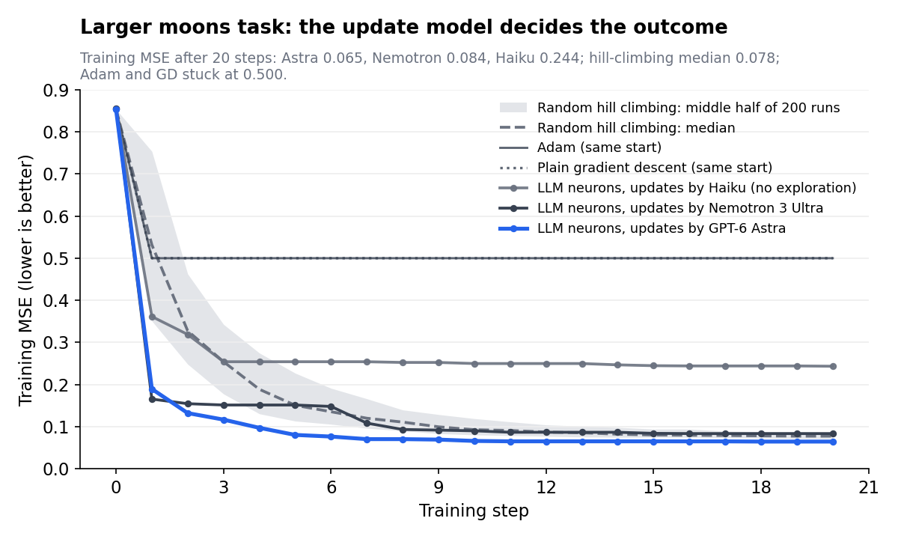

We replaced every neuron in a neural network with a reasoning model
Each neuron did its own arithmetic and decided its own weights, seeing only one number: the loss. Here is what happened, what the neurons said while they learned, and where it beat (and lost to) ordinary training.
The idea
A neuron in a neural network is simple: multiply each input by a weight, add a bias, squash the result through an activation function. Training adjusts those weights using gradients, the exact slope of the error with respect to every weight.
We asked a different question. What if every neuron were a reasoning model? Each one would do its own arithmetic, and each one would decide for itself how to change its weights. It would get no gradient, no targets, and no description of the task. Just one number after every step: the loss, with “lower is better”.
We built exactly that, with networks of 3 to 5 LLM neurons, on four small tasks. The short version:
- The networks learned on every task, including ones where Adam and gradient descent got stuck completely.
- With a weak update model, the LLM neurons were about as good as random trial and error.
- With a strong one (GPT-6 Astra), they fitted the hardest task better than 88% of random-search runs.
- And along the way, without ever being told what the task was, Astra wrote that it was “likely about classifying moons”. It was.
How an LLM neuron works
Every neuron has two jobs, and an LLM does both.
Job 1: compute the output (the forward pass). The neuron gets its inputs, weights, bias and activation, and must reply with one number. We used Claude Haiku 5.5 for this, because it is cheap and, once prompted properly, exact. A real exchange from one of our runs:
inputs: [0.13, -1.01]
weights: [-0.393, -0.047]
bias: 0.167
activation: reluANSWER: 0.1634That is correct: −0.393 × 0.13 + (−0.047) × (−1.01) + 0.167 = 0.1634, and ReLU leaves positive numbers alone. A run makes about 9,000 to 10,000 of these calls, and identical questions are answered from a cache so the network always gives the same output for the same weights.
Job 2: decide how to change (the update). After each step, every neuron gets a briefing and replies with new parameters as JSON. The briefing contains its current weights and everyone else’s, what it received and output on each example, a table of every setting it has tried with the loss each one produced, how much influence each neuron has on the final output, and what the neurons before it just changed. A real reply:
{"weights": [1.0, -1.0], "bias": 0.0, "activation": "tanh"}The activation is a parameter the neuron chooses, from relu, tanh, sigmoid, abs, square, step or anything it writes as a formula.
The rules of the game. Neurons update one at a time. After each proposal we re-measure the loss on the whole network. If the loss went up, the change is undone automatically, and the next neuron sees exactly what happened:
L0N3: weights [0.009, -0.436], bias 0.512, abs
-> weights [0.009, -0.436], bias 0.112, tanh
=> loss 0.1896 -> 0.2047 (+0.0151) REVERTED (raised the loss)The loss itself, mean squared error, is computed in plain Python. The neurons are never told its formula, the targets, or the task.
What the neurons said
The best part of this experiment is that every decision comes with an explanation. All quotes below are the reasoning text the models returned before each update, copied from our logs. For GPT-6 Astra this is a summary of its reasoning provided by the API, not the raw chain of thought.
Astra worked out the task without being told
The neurons were never told what the task was. Their prompts contain weights, inputs, outputs and a loss number, nothing more. Partway through training on our two-moons dataset, one of Astra’s hidden neurons wrote:
“It seems I’m dealing with an unknown task that’s likely about classifying moons.”
Others described “binary targets” and “low versus high binary targets”. It was not always right: another neuron guessed “a classification task involving circles”, a different classic benchmark. But it was reading the shape of the data and the behaviour of the loss and forming a hypothesis, which is more than any gradient does.
The output neuron then acted on that hypothesis. Reasoning that the targets were binary, it invented its own activation function:
“Clipped ReLU could be an interesting option... I’m considering using the formula min(1, max(0, x))”
That keeps predictions between 0 and 1, exactly what you want for 0/1 labels. Nobody suggested it. Later neurons tried more of their own designs: x*x - 1, a leaky ReLU written as max(0, x) + 0.3*min(0, x), and 1 / (1 + exp(-x + 0.25*x*x)).
Nemotron diagnosed a useless neuron in one look
One hidden neuron started with a step activation that output 1 for nearly every point. Nemotron 3 Ultra’s reasoning, at the very first update:
“With current weights and bias, we output 1 for almost all inputs except a few... That means our neuron is almost always 1. That might not be discriminative enough.”
It switched to tanh with weights [1.0, −1.0], a feature that compares the two inputs. The loss dropped from 0.856 to 0.167 in that single move.
Haiku found the XOR trick
On XOR, which needs to treat “one input on” differently from “both on”, a Haiku neuron noticed what its own weights were doing:
“L0N1 behaves like a difference of the inputs, x1 minus x2, which looks fine for an XOR-like target.”
It never saw a target. It guessed the task from the loss and the inputs, as Astra did later.
A neuron caught our bug
In our first version, a 20-token reply limit cut off half the neurons’ answers, and our code misread the fragments. One neuron noticed something was wrong before we did:
“...the outputs don’t line up with what I’d predict from the weights. The model may be taking different inputs than I assumed.”
And sometimes they lost their nerve
On the largest task, Haiku neurons became timid after most of their moves were undone:
“A bias of 0.0 with the same weights is a small, safe step.”
“I’m also considering an activation swap to identity, though that feels risky.”
That caution stalled training completely, and it shaped the next section.
How they moved their weights
The model choosing the updates mattered more than anything else we changed. We kept Haiku for the arithmetic and swapped only the model that decides the new weights.

Each model had a recognisable style:
- Haiku: timid. Typical biggest change per update 0.09. 11 of 100 updates lowered the loss. 3 activation changes kept.
- Nemotron 3 Ultra: bold. Typical biggest change 1.00. 15 of 100 updates lowered the loss. 14 activation changes kept.
- GPT-6 Astra: measured. Typical biggest change 0.50. 23 of 100 updates lowered the loss. 4 activation changes kept, including its own clipped ReLU.
Haiku nudged. Its typical move was under 0.1. Most nudges made things slightly worse and were undone, so it nudged even less, and training froze at step 3.
Nemotron leapt. Once we added a rule forcing big moves after two failed updates, Nemotron made changes of 1.0 or more and switched activations constantly. Most leaps missed, but the few that landed were large: the single best one cut the loss by 80%.
Astra aimed. Its moves were mid-sized and better chosen: nearly one in four lowered the loss, twice Haiku’s rate. It often changed one thing at a time and explained which earlier attempt it was building on (“Prior attempts with .3 resulted in failure, so I should choose .5”).
Three failure patterns showed up repeatedly, and each needed a fix: neurons going round in circles (a bias that went 0.5 → 0.7 → 0.5 → 0.3 → 0.5, five times over), neurons being cut off when a downstream neuron set their weight to 0, and the timidity above. Giving each neuron a table of everything it had tried, a measure of its influence, and a rule against tiny moves dealt with each in turn.
The experiments
We ran four tasks, from tiny to small:
- XOR: output 1 when exactly one of two inputs is on. Network 2 → 2 → 1, 9 weights to learn, 4 training points, no test set.
- 3-bit parity: output 1 when an odd number of three inputs is on. Network 3 → 3 → 1, 16 weights, 8 training points, no test set.
- Moons: which of two interlocking half-moons a 2D point belongs to. Network 2 → 3 → 1, 13 weights, 16 training and 16 test points.
- Moons, larger: the same, with more points and more noise. Network 2 → 4 → 1, 17 weights, 40 training and 40 test points.
The moons tasks have a separate test set the neurons never see, so we can check whether a network learned the shape or just memorised the training points.
Making the comparison fair
The obvious comparison, LLM neurons against normal training, is not fair: normal training (backpropagation with gradient descent or Adam) sees the loss formula and the targets, and our neurons see neither. So our main baseline was random hill climbing, a method with exactly the same information and rules:
- the same network, the same starting weights and the same data
- only the loss value, never gradients or targets
- updates one neuron at a time, with the same automatic undo
The only difference is who proposes each change: an LLM that reasons about it, or random noise. If the LLM is no better than noise, its reasoning is not helping.
Because one random-search run can be lucky or unlucky, we ran it 200 times from the same start and reported where the LLM run would rank among them. We also ran plain gradient descent and Adam, from the same start and from 50 random starts, as a reference for what full information achieves.
One caveat matters for everything that follows: each LLM result is a single run. Two runs with identical settings ended at 0.173 and 0.193, so treat individual numbers as indications, not proof.
Results
After 20 steps, LLM neurons beat gradient methods wherever those got stuck, and roughly matched random search, until a strong model took the lead on the largest task.
| Task | Model choosing the weights | LLM neurons (training error) | Random search, typical run | LLM beats this share of random runs | Adam from the same start |
|---|---|---|---|---|---|
| XOR | Haiku | 0.149 | 0.187 | 72% | 0.500 (stuck) |
| 3-bit parity | Haiku | 0.173 | 0.174 | 50% | 0.197 |
| Moons | Haiku | 0.090 | 0.068 | 18% | 0.056 |
| Moons, larger | Haiku | 0.244 | 0.078 | about 0% | 0.500 (stuck) |
| Moons, larger | Nemotron 3 Ultra | 0.084 | 0.078 | 29% | 0.500 (stuck) |
| Moons, larger | GPT-6 Astra | 0.065 | 0.078 | 88% | 0.500 (stuck) |
Three things stand out.
Gradient methods can get completely stuck; reasoning neurons don’t. From our random starting weights, the output neuron was a ReLU receiving negative input on every example, and one hidden neuron used a step activation. Both have zero slope, so every gradient was 0: Adam and gradient descent never moved from 0.500. The LLM neurons simply looked at the situation and changed the activations. To be fair, random search escapes these traps too, so this advantage comes from not needing gradients at all.
Smarter update models fit faster. With Haiku, the LLM was no better than noise on average. With GPT-6 Astra on the largest task, it reached a training error of 0.081 by step 5, when the typical random-search run was still at 0.151.
On new data, the picture is subtler. On the held-out test points, Nemotron got 82.5% right (33 of 40) and Astra 77.5% (31 of 40), against 80% for the typical random-search run. Both beat about two-thirds of random-search runs on test error. But when we compared networks with the same training error, Nemotron’s advantage disappeared: it had simply stopped at a point where test error happens to be low. Astra still did better than 68% of comparable random-search networks, in a single run.
Given enough steps, ordinary training still wins easily. With standard activations and 2,000 steps, plain gradient descent reached a median of 95% test accuracy on the larger moons task across 50 random starts.
How this differs from earlier work
None of the ingredients is new on its own. What we did not find in earlier work is the combination: one reasoning agent per neuron, doing that neuron’s arithmetic and tuning its own weights and activation, coordinating with its neighbours, and never told what the task is.
- OPRO (Google DeepMind): one LLM improves a solution from a history of past attempts and scores, including linear-regression weights. We use one LLM per neuron, each tuning only itself; the task is hidden; and the LLM also computes the output.
- NeuroGen: an LLM writes a network’s weights directly, without gradient training. We iterate instead: propose, measure, keep or undo, repeat.
- Deep Language Networks: layers of LLMs whose prompts act as the weights. Our neurons pass numbers, not text, and have numeric weights.
- TextGrad and Agent Symbolic Learning: written feedback flows backward through LLM pipelines to improve prompts. We tune numbers from a single loss value, with no written feedback.
- Hill climbing and coordinate descent: try a change to one block of parameters, keep it if the score improves. Same loop, but a reasoning model proposes each change instead of random noise.
The closest relative is OPRO run separately inside every neuron. The experiment above is exactly what tests whether that decentralisation, plus reasoning, buys anything over the plain loop with random proposals.
How we could use this
This is not a way to train large networks: for plain fitting, random search and gradient descent do the job far faster. The value is where gradients don’t reach and where explanations matter.
- Optimising things that have no gradient. Systems with step functions, discrete choices, rules, simulators or physical hardware cannot be trained by backpropagation. Our networks with
stepactivations were exactly that case, and reasoning neurons trained them anyway. - Black-box objectives. When the only feedback is a score (a human rating, a test pass rate, a business metric), reasoning optimisers can form hypotheses about what the score rewards, as Astra did when it guessed the task was classifying moons.
- Training you can audit. Every weight change here comes with a written reason. For small, high-stakes models, such as controllers or scoring rules, a log of why each parameter moved is worth a lot.
- Designing activations and structure. Our neurons invented a clipped ReLU, a leaky ReLU and several custom functions on their own. Pointed at that job deliberately, an LLM could propose activations and architectures for gradient training to finish.
- A coach for ordinary training. Gradient training fails in recognisable ways: dead neurons, plateaus, bad starting points. A reasoning model watching the run could spot those and intervene, then hand back to the fast optimiser.
- A testbed for cooperating agents. A network is a clean, measurable setting for studying how many AI agents coordinate when each sees only part of the picture.
What comes next
Everything above is one run per setting, so the next step is repeating the key runs with several random seeds. After that: a baseline where one central LLM tunes every weight at once (does one-agent-per-neuron actually help?), switching off each component in turn to see which ones matter, and larger tasks. The question we most want answered is whether reasoning genuinely beats random search, or just matches it at a much higher price. On the evidence so far, the answer depends on how good the reasoner is.